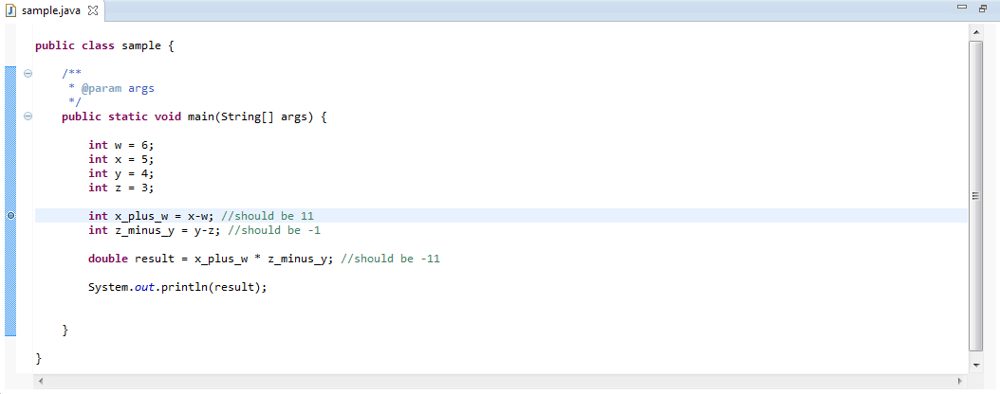
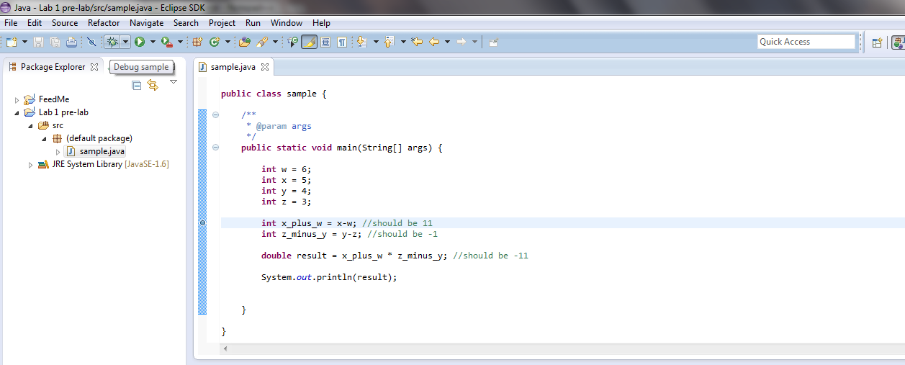
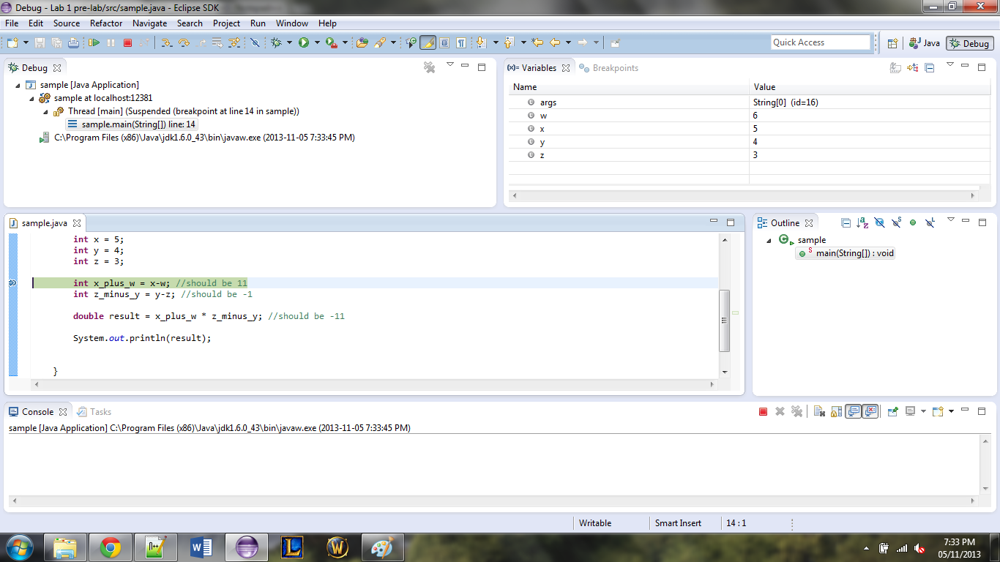
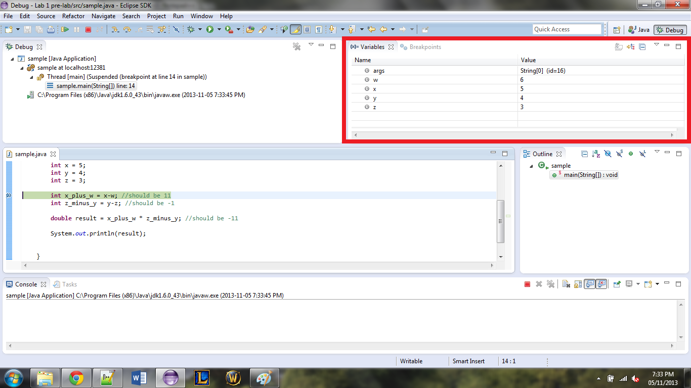
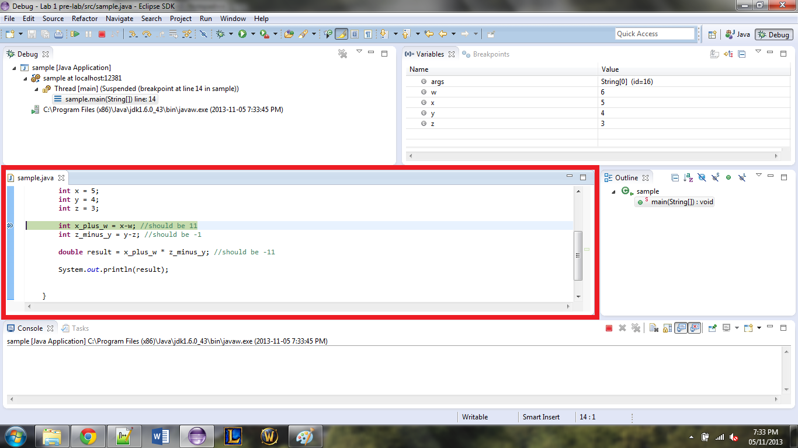
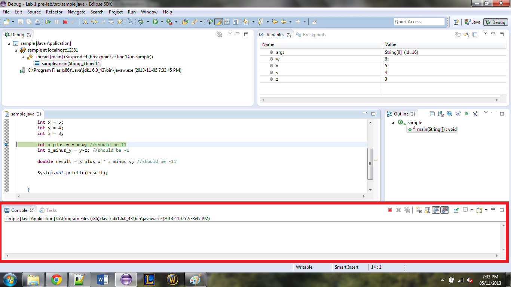

Objectives
[2 points] Download the Sample.java file.
This program compiles but it is not doing what it should be. We will use the debugger to fix that. To tell the debugger where to start
looking for problems you will need to place a breakpoint in your code. To do this double click in the blue margin on the line you want to
look at. For us, we will want to look at the line where the variable x_plus_w is initialized.

Now click on the button to start the Debugger, it is located next to the run button.

This may ask you to open a new perspective, click yes. Your screen should now look like this.

In the top right you will see all variables that are currently being used in your program.

You will also see the code that is being run with the current line highlighted.

The final area in this perspective that you will want to become familiar with is the console. This is the same as in the java perspective
you are used to, it is where all println statements will show.

Now, the controls in this perspective are located at the top of the screen, the two that you will be using throughout the year the most are
the step over and step into controls.
These controls will allow you to execute one line of code at a time and view the changes in the variables window. The Step Into button will allow you to enter method calls where as the Step Over option will allow you to skip over calls to methods and will just update the variables based on what the method did.
Now use the debugger to trace through the file and find the errors. Use to comments to see what the program should be doing, and when a variable is given the wrong value stop the debugger by pressing the stop button, located next to the Step Into button. Then enter the Java perspective by clicking the button in the top right, change the code and then debug again.